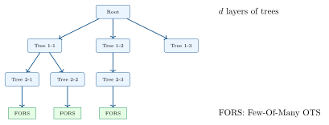

Chapter 2: PQC Algorithm Families¶
2.1 Lattice-Based Cryptography¶
Lattice-based schemes are the most deployed PQC family, forming the basis of three of the four current NIST standards.
2.1.1 ML-KEM (FIPS 203) — Module-Lattice KEM¶
ML-KEM (formerly CRYSTALS-Kyber) is the primary NIST KEM standard. It is based on the Module Learning With Errors (MLWE) problem over the ring \(R_q = \mathbb{Z}_q[X]/(X^{256}+1)\) with \(q=3329\).
ML-KEM Key Generation¶
Algorithm: ML-KEM KeyGen (simplified)
-
Sample \(\mathbf{A} \in R_q^{k \times k}\) from a seed (XOF/SHAKE-128)
-
Sample secret \(\mathbf{s} \in R_q^k\) with small coefficients (\(\eta_1\)-CBD)
-
Sample error \(\mathbf{e} \in R_q^k\) with small coefficients (\(\eta_1\)-CBD)
-
Compute public key: \(\mathbf{t} = \text{NTT}(\mathbf{A}) \circ \text{NTT}(\mathbf{s}) + \text{NTT}(\mathbf{e})\)
-
return \((\mathit{ek} = (\mathbf{A}, \mathbf{t}), \;\mathit{dk} = \mathbf{s})\)
ML-KEM Parameter Sets¶
| Parameter | \(k\) | \(\eta_1\) | \(\eta_2\) | \(d_u\) | \(d_v\) | pk (B) | sk (B) | ct (B) |
|---|---|---|---|---|---|---|---|---|
| ML-KEM-512 | 2 | 3 | 2 | 10 | 4 | 800 | 1632 | 768 |
| ML-KEM-768 | 3 | 2 | 2 | 10 | 4 | 1184 | 2400 | 1088 |
| ML-KEM-1024 | 4 | 2 | 2 | 11 | 5 | 1568 | 3168 | 1568 |
| Variant | NIST Level | KeyGen (\(\mu\)s) | Encaps (\(\mu\)s) | Decaps (\(\mu\)s) |
|---|---|---|---|---|
| ML-KEM-512 | 1 | 23 | 29 | 32 |
| ML-KEM-768 | 3 | 37 | 46 | 50 |
| ML-KEM-1024 | 5 | 57 | 68 | 73 |
Benchmarks: Intel Core i7-8750H, AVX2 optimized (approximate reference values from pqclean).
2.1.2 ML-DSA (FIPS 204) — Module-Lattice Digital Signature Algorithm¶
ML-DSA (formerly CRYSTALS-Dilithium) is based on the hardness of MLWE and Module-SIS over \(R_q = \mathbb{Z}_q[X]/(X^{256}+1)\) with \(q = 8380417\).
ML-DSA Sign/Verify¶
Algorithm: ML-DSA Sign (Fiat-Shamir with Aborts, simplified)
-
\(\mathbf{A} \leftarrow\) ExpandA(\(\rho\)); \(\mathbf{s}_1, \mathbf{s}_2 \leftarrow\) small vectors from private seed
-
Compute \(\mathbf{t} = \mathbf{A}\mathbf{s}_1 + \mathbf{s}_2\); \((\mathbf{t}_1, \mathbf{t}_0) \leftarrow\) Power2Round(\(\mathbf{t}\))
-
repeat
-
Sample masking vector \(\mathbf{y}\) with coefficients in \((-\gamma_1, \gamma_1]\)
-
\(\mathbf{w} = \mathbf{A}\mathbf{y}\); \(\mathbf{w}_1 = \text{HighBits}(\mathbf{w})\)
-
\(c = H(\mu \| \mathbf{w}_1)\) // Challenge hash
-
\(\mathbf{z} = \mathbf{y} + c\mathbf{s}_1\) // Response vector
-
if \(\|\mathbf{z}\|_\infty \geq \gamma_1 - \beta\) or hints needed \(> \omega\) then
- continue // Rejection sampling — restart
-
-
until conditions met
-
return \(\sigma = (c, \mathbf{z}, \text{hints})\)
| Variant | Level | \((k,l)\) | pk (B) | sk (B) | sig (B) | Sign (\(\mu\)s) |
|---|---|---|---|---|---|---|
| ML-DSA-44 | 2 | \((4,4)\) | 1312 | 2528 | 2420 | \(\sim\)77 |
| ML-DSA-65 | 3 | \((6,5)\) | 1952 | 4000 | 3309 | \(\sim\)111 |
| ML-DSA-87 | 5 | \((8,7)\) | 2592 | 4864 | 4627 | \(\sim\)164 |
2.1.3 FN-DSA (FIPS 206) — Falcon¶
FN-DSA (FALCON) uses NTRU lattices with a Gaussian sampler for lattice-based signatures. It achieves significantly smaller signatures than ML-DSA but requires floating-point arithmetic, posing implementation challenges.
| Variant | Level | pk (B) | sk (B) | sig (B) |
|---|---|---|---|---|
| FALCON-512 | 1 | 897 | 1281 | \(\sim\)666 |
| FALCON-1024 | 5 | 1793 | 2305 | \(\sim\)1280 |
FALCON Implementation Challenges
FALCON’s Gaussian sampler requires high-precision floating-point arithmetic. This creates significant side-channel risks: timing variations and floating-point exceptions can leak secret information. Constant-time FP implementations are non-trivial. Use ML-DSA (FIPS 204) for general use cases; FN-DSA is preferred only when signature size is critical.
2.2 Code-Based Cryptography¶
Code-based cryptography has the longest security track record in PQC, dating to McEliece’s 1978 scheme.
2.2.1 Classic McEliece¶
Classic McEliece uses binary Goppa codes, which are a family of algebraic codes with efficient decoding algorithms. The security relies on the difficulty of decoding a random linear code (the Syndrome Decoding Problem, NP-complete).
McEliece Construction¶
-
Setup: Choose a binary Goppa code \(\mathcal{G}\) with parameters \([n, k, t]\) (length \(n\), dimension \(k\), error-correcting capacity \(t\)). Generate a parity-check matrix \(\mathbf{H}\) and an efficient decoder.
-
Public Key: A randomized generator matrix \(\mathbf{G}' = \mathbf{S}\mathbf{G}\mathbf{P}\) (where \(\mathbf{S}\) is a secret non-singular matrix, \(\mathbf{G}\) is the Goppa code generator, \(\mathbf{P}\) is a permutation matrix).
-
Encryption: \(c = m\mathbf{G}' + e\) where \(e\) has weight \(\leq t\).
-
Decryption: Use \(\mathbf{S}^{-1}\) and \(\mathbf{P}^{-1}\) to transform \(c\), then run the Goppa decoder.
| Parameter set | \(n\) | \(t\) | pk (KB) | sk (B) |
|---|---|---|---|---|
| mceliece348864 | 3488 | 64 | 261 | 6452 |
| mceliece460896 | 4608 | 96 | 524 | 13568 |
| mceliece6688128 | 6688 | 128 | 1357 | 13932 |
| mceliece8192128 | 8192 | 128 | 1357 | 14120 |
Classic McEliece has a 1.3 MB public key — impractical for most applications but with extremely conservative security guarantees.
2.2.2 HQC — The 5th NIST Algorithm¶
Hamming Quasi-Cyclic (HQC), selected by NIST in March 2025 as the fifth PQC standard, is a code-based KEM with much more practical key sizes than Classic McEliece.
HQC is based on the Decisional QC-LRPC (Low Rank Parity Check) decoding problem in the Hamming metric over quasi-cyclic codes.
HQC Construction Overview¶
HQC encodes messages using Reed-Muller codes composed with Reed-Solomon codes for efficient error correction, then adds quasi-cyclic structure to reduce key sizes.
Algorithm: HQC Encapsulation (simplified)
-
Public key: \((h, \mathbf{s}) \in R \times R\) where \(R = \mathbb{F}_2[X]/(X^n-1)\)
-
Sample message \(m\); compute \((\mathbf{e}_1, \mathbf{e}_2, \mathbf{r}_1, \mathbf{r}_2) \leftarrow G(m)\)
-
\(\mathbf{u} = \mathbf{r}_1 + h \cdot \mathbf{r}_2\) // Quasi-cyclic structure
-
\(\mathbf{v} = m\mathcal{C} + \mathbf{s} \cdot \mathbf{r}_2 + \mathbf{e}_2\) // Encode message with error
-
Shared key \(K = H(\mathbf{u}, \mathbf{v}, m)\)
-
return \(((K, (\mathbf{u}, \mathbf{v})))\)
| Variant | Level | pk (B) | sk (B) | ct (B) | \(n\) |
|---|---|---|---|---|---|
| HQC-128 | 1 | 2249 | 2289 | 4481 | 17669 |
| HQC-192 | 3 | 4522 | 4562 | 9026 | 35851 |
| HQC-256 | 5 | 7245 | 7285 | 14469 | 57637 |
2.3 Hash-Based Cryptography¶
Hash-based signatures derive their security entirely from the collision resistance and one-wayness of the underlying hash function, making them the most “conservative” post-quantum signature choice.
2.3.1 Lamport One-Time Signature¶
The foundational idea: for each message bit, include either the preimage for 0 or the preimage for 1.
-
KeyGen: For each of \(n\) message bits, sample two random values \((x_i^0, x_i^1)\). Public key: \((H(x_i^0), H(x_i^1))\).
-
Sign: For message bit \(m_i\), release \(x_i^{m_i}\).
-
Verify: Check \(H(x_i^{m_i}) = pk_i^{m_i}\).
Limitation: each keypair can only be used once. Winternitz OTS (W-OTS+) amortizes this across \(w\) bits.
2.3.2 SLH-DSA (FIPS 205) — SPHINCS+¶
SLH-DSA is a stateless hash-based signature scheme using a hypertree structure of XMSS (extended Merkle signature scheme) trees.

| Variant | Level | Hash | pk (B) | sk (B) | sig (B) | Sign (ms) |
|---|---|---|---|---|---|---|
| SLH-DSA-SHA2-128s | 1 | SHA-256 | 32 | 64 | 7856 | \(\sim\)1200 |
| SLH-DSA-SHA2-128f | 1 | SHA-256 | 32 | 64 | 17088 | \(\sim\)15 |
| SLH-DSA-SHAKE-128s | 1 | SHAKE-256 | 32 | 64 | 7856 | \(\sim\)2200 |
| SLH-DSA-SHAKE-128f | 1 | SHAKE-256 | 32 | 64 | 17088 | \(\sim\)26 |
| SLH-DSA-SHA2-256s | 5 | SHA-512 | 64 | 128 | 29792 | \(\sim\)20000 |
| SLH-DSA-SHA2-256f | 5 | SHA-512 | 64 | 128 | 49856 | \(\sim\)130 |
The “s” (small) variants minimize signature size at the cost of signing time; “f” (fast) variants sign quickly but have larger signatures.
SLH-DSA Advantages
-
Conservative security: Only assumes hash function security (no novel math)
-
Tiny public key: Only 32 bytes (smallest of any PQC scheme)
-
Stateless: No state management required (unlike XMSS/LMS)
-
Quantum-safe by design: Hash security well-understood against Grover
SLH-DSA Limitations
SLH-DSA has slow signing (up to 20 seconds for -256s) and very large signatures (up to 50 KB). It is best used for code signing, certificate authorities, and other low-frequency signing operations where signature size and speed are not critical.
2.3.3 Stateful Hash-Based Signatures: XMSS and LMS¶
XMSS (RFC 8391) and LMS (RFC 8554) are stateful alternatives, providing smaller signatures but requiring careful state management (the same key must never be reused).
| Scheme | Stateful? | Sig size | Speed | Use case |
|---|---|---|---|---|
| SLH-DSA | No | 8–50 KB | Slow (sign) | General, CA, code sign |
| XMSS | Yes | 2–3 KB | Faster | Firmware, HSM |
| LMS | Yes | 2–4 KB | Faster | IoT, embedded |
2.4 Multivariate Cryptography¶
Multivariate schemes base security on the MQ problem: solving a system of multivariate quadratic equations over a finite field.
Definition 2.1 (MQ Problem)
Given \(m\) quadratic polynomials \(f_1, …, f_m \in \mathbb{F}_q[x_1, …, x_n]\), find \((a_1, …, a_n) \in \mathbb{F}_q^n\) such that \(f_i(a_1, …, a_n) = 0\) for all \(i\). The MQ problem is NP-hard for \(m \approx n\).
2.4.1 Oil and Vinegar Construction¶
The Unbalanced Oil and Vinegar (UOV) scheme remains a promising construction after the collapse of Rainbow:
-
Setup: Partition variables into “oil” (\(o\) variables) and “vinegar” (\(v\) variables).
-
Public key: A system of \(o\) quadratic polynomials mixing both types.
-
Private trapdoor: The separation of oil and vinegar variables allows efficient inversion.
-
Sign: Fix vinegar variables randomly; solve for oil variables (linear system).
Rainbow NIST Withdrawal
Rainbow, a multivariate signature scheme that reached Round 3 of NIST’s competition, was broken in 2022 by Ward Beullens using a “rectangular MinRank attack” that required only 53 CPU hours to recover the private key from a Rainbow III (Level 3) public key. This highlights that multivariate schemes remain an active research area with ongoing security analysis.
| Scheme | Base | pk (B) | sig (B) | Status |
|---|---|---|---|---|
| MAYO | Enhanced UOV | 1168 (MAYO-1) | 321 | Active, promising |
| QR-UOV | UOV over quotient rings | \(\sim\)55 KB | 264 | Active |
| SNOVA | UOV variant | \(\sim\)1 KB | 69–200 | Active, efficient |
| UOV | Classic UOV | 278 KB | 96 | Active, large pk |
2.5 Isogeny-Based Cryptography¶
Isogeny-based schemes use maps (isogenies) between elliptic curves as one-way functions. After the 2022 SIDH/SIKE break, the field has pivoted to new constructions.
2.5.1 The SIDH/SIKE Collapse¶
SIKE (Supersingular Isogeny Key Encapsulation) was a NIST Round 4 finalist based on the SIDH problem. In July 2022, Castryck and Decru published a devastating attack that recovered SIKE private keys in just 62 CPU minutes using classical computers, based on exploiting auxiliary points that SIDH was required to reveal.
SIDH/SIKE is Broken
SIKE was completely broken by a classical attack in 2022. Do not use SIKE or SIDH for any application. The Castryck-Decru attack used torsion point information to recover secret isogenies via a “glue-and-split” technique over abelian surfaces.
2.5.2 Surviving Constructions¶
| Scheme | Security Basis | Key size | Status |
|---|---|---|---|
| SQIsign | GAIP (Group Action Inverse Problem) | 64B pk, 177B sig | Active research |
| CSIDH | Class group action on SS curves | 64B keys | Research; slower attacks known |
| SQIsignHD | High-dimensional SQIsign variant | Smaller | Pre-standard research |
SQIsign is particularly notable for achieving the smallest combined key+signature sizes of any PQC signature scheme but is currently 1000\(\times\) slower than ML-DSA.
2.6 Algorithm Selection Guide¶
| Use Case | Recommended KEM | Recommended Signature |
|---|---|---|
| General TLS (server) | ML-KEM-768 | ML-DSA-65 |
| High security / Government | ML-KEM-1024 | ML-DSA-87 |
| Resource-constrained (IoT) | ML-KEM-512 | SLH-DSA-SHA2-128f |
| Code signing / PKI CA | — | SLH-DSA-SHA2-256s |
| Bandwidth-critical | ML-KEM-768 | FN-DSA-1024 |
| Maximum conservatism | HQC-128 (+ ML-KEM-768) | SLH-DSA-SHA2-128s |
2.7 Summary¶
-
ML-KEM (FIPS 203) is the primary PQC KEM: fast, compact, based on MLWE.
-
ML-DSA (FIPS 204) is the general-purpose PQC signature; prefers over FN-DSA for most applications.
-
FN-DSA (FIPS 206) offers smaller signatures but complex constant-time implementation.
-
SLH-DSA (FIPS 205) is the conservative hash-based signature; ideal for long-lived keys and CAs.
-
HQC is the 5th NIST algorithm (code-based KEM), selected March 2025, providing backup to lattice-based schemes.
-
Rainbow was broken in 2022 — never use it; UOV variants remain under active research.
-
SIKE/SIDH were broken by a classical attack in 2022 — never use them.
-
SQIsign and CSIDH represent promising isogeny-based constructions but remain pre-standard.